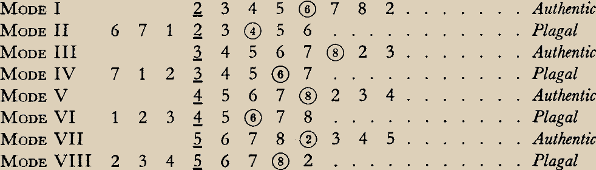

Loading
CPU Gregorian Chant
|
|
<- Start Here |
:
Please switch to horizontal view and refresh the page to use CPU Gregorian Chant on mobile devices.
[x]
Burkholder, J. Peter, Donald Jay Grout, & Claude V. Palisca. A History of Western Music: Seventh Edition. New York, London: W. W. Norton & Company, 2006.
Goodchild, Mary A. Gregorian Chant for Church and School. Boston: Ginn & Company, 1944.
Pincherle, Marc. An illustrated History of Music. New York: Reynal & Company, 1959.
Monophonic chants have been sung in liturgies since the earliest days of the Church. For centuries, the method of chant transmission was oral. This presented problems, as the lack of a unified musical practice left much room for interpretation and, in turn, melodic corruption. In the sixth century, a centuries-long musical crusade to standardize the plainsong repertoire and purify the liturgical practices of the Christian world was embarked upon probably by Pope Greogry I and other leaders of the Roman Catholic Church. These holy men sought to establish a corpus of songs that would include the anthems and responses for the rites of the ecclesiastical year. The performative practices of this corpus had to be established, and Rome's school of singing, the Schola Cantorum, was reorganized so that its students could travel as missionaries of a unified musical praxis. [1]
One of the most important developments to come from this Gregorian crusade was the introduction of notation. The date of invention is unknown, but the earliest surviving tomes of notated chants date to the late ninth century. Its earliest manifestation presented itself in the form of neumatic notation, a style in which symbols called neumes appear above words, denoting the number of syllables to sing and the melodic direction of the song. These early neumes, however, did not specify the exact pitches or rhythms to be sung, and as such served only as a memory aid to those already familiar with the melody. [2]
For centuries, notation continued to develop through the innovations of devoted individuals. Various forms of neumatic notation existed across the broad Christian ethnosphere, but one form, square notation, persisted into our modern era. Square notation utilized a four line staff, which allowed the notation of exact notes and rhythms, a key innovation to ensure the absolute longevity of a centures-old oral tradition. [3]
Since the establishment of the Corpus, spiritual musical innovation had run stagnant. Charlemagne (748-814) recognized this stasis, and, through his intervention it became common for the theoretical side of music to be taught at monasteries. The teaching of music as a mathematic practice reinvigorated spiritual musical innovation. Guido d'Arezzo (c.991-after 1033), a key innovater of music and notation once expressed, "Nam qui facit quod non sapit defnitur bestia." [For he who does what he does not know is, by definition, a beast.] [4]
Pincherle, "An Illustrated History of Music" 1959, 11-13 [1]
Burkholder, Grout, & Palisca, "A History of Western Music" 2006, 34-35 [2]
Pincherle, "An Illustrated History of Music" 1959, 14 [3]
Pincherle, "An Illustrated History of Music" 1959, 15 [4]
Gregorian notation fully materialized in the first half of the eleventh century with the invention of the four-line staff, an innovation ascribed to the Benedictine monk, Guido of Arezzo (Italian: Guido d'Arezzo). The four-line staff enabled the notation of specific pitches and rhythms. Two movable clefs, the Do and Fa clefs, are used to determine the placement of their respective pitches. These may be placed on different lines of the staff to change the singing range. [1]
 Fa Clef
Fa Clef
Neumes, or groups of notes sung to one syllable, occur frequently in plainsong. Neumes appear in many varieties, and each variation is named based on its melodic qualities. [2]
Gregorian notation includes a variety of glyphs equal in rhythmic value but separate in quality. There is much speculation on the perfomative intentions behind these glyphs, but their exact meanings are not decidedly known. The punctum is the only glyph that may appear alone, with all others serving neumatic function. [3]

Gregorian notation is not defined by time signatures, rather the length of the sections is dependent on the textual content and neumatic form. Vertical bars of various lengths appear in chants to separate phrases and allow the singer to breathe. These bars are thoughtfully placed such that the lyrical content remains uninterrupted. [4]
Goodchild, "Gregorian Chant for Church and School" 1944, 6-7 [1]
Goodchild, "Gregorian Chant for Church and School" 1944, 15 [2]
Goodchild, "Gregorian Chant for Church and School" 1944, 7 [3]
Goodchild, "Gregorian Chant for Church and School" 1944, 11 [4]
Like our modern musical alphabet, the Gregorian modal system uses the diatonic scale. The notes are almost always natural, but one accidental, the flat, appears occasionally. The flat always falls on the seventh degree, Ti. [1]

Note that the locations of these pitches will vary depending on the clef used and its placement on the staff.
There are eight Gregorian modes, each defined by a finalis and organized in two categories: authentic and plagal. Each authentic mode has a relative plagal and vice versa. Relative modes share the same finalis. [1]
Finales are underlined. Dominants are encircled.
Goodchild, "Gregorian Chant for Church and School" 1944, 21 [1]
CPU Gregorian Chant was created by Robert Strong as the capstone project for his undergraduate studies in Creative Technology & Design at the University of Colorado, Boulder.
Visit the project's Github page for documentarion.
The web components of the project were built using HMTL, CSS and various Javascript libraries. The JS libraries used are:
Exsurge.js for the rendering of Gregorian chant notation.
Tone.js for the production of sound.
Pyscript for the communication of Python and Javascript.
Bootstrap for the utility of the drop down buttons.
The music is generated not by "AI". Rather, it is generated by an algorithm written in Python. The algorithm uses Markov chains to generate the music, the data of which was mostly retrieved from Sister Mary Antonine Goodchild's Gregorian Chant for Church and School of 1944.